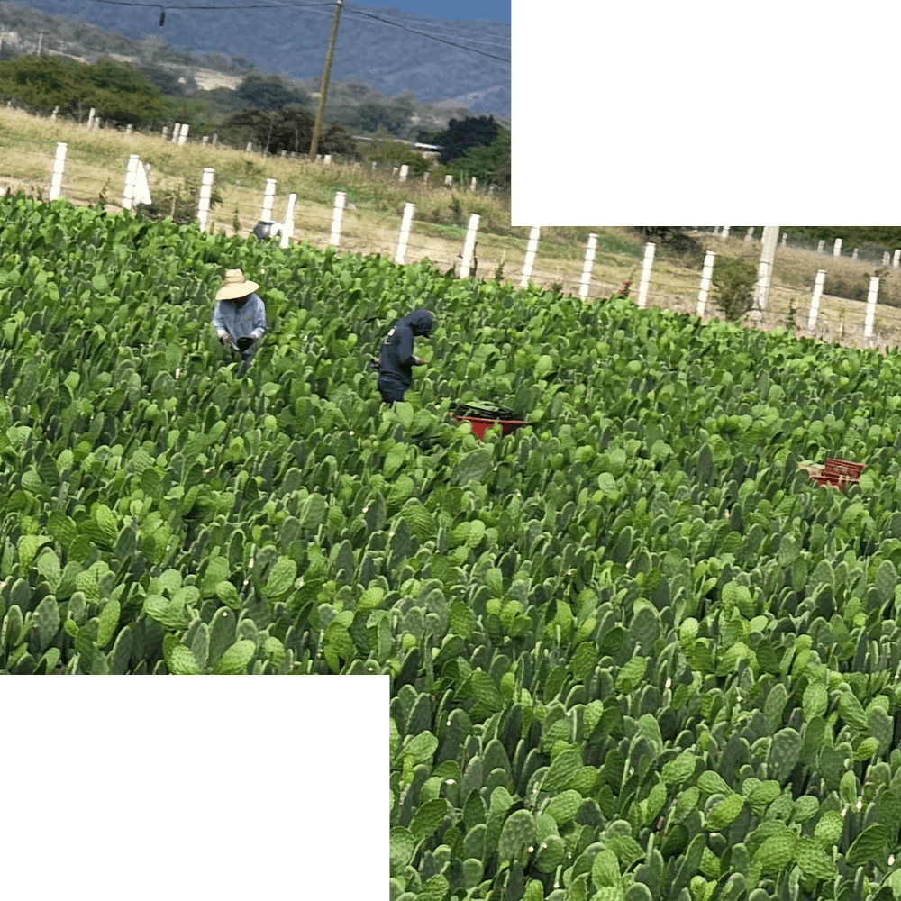

DONDE TODO COMENZÓ
Sara, la dueña de este restaurante, nació en el pintoresco pueblo de San Luis de Custique, en Zacatecas. Allí, su abuela cuidaba de ella y de sus cinco hermanos. Fue su abuela quien le enseñó a cocinar los platillos más simples pero deliciosos que pueden existir.
Ahora, ya adulta, Sara visita frecuentemente a su abuela en ese mágico y hermoso pueblo. Aprovecha cada visita para traer ingredientes frescos como nopales, orégano y chiles, cultivados con amor en San Luis de Custique. Estos ingredientes son la esencia de nuestros platillos, llenos de tradición y sabor auténtico.
